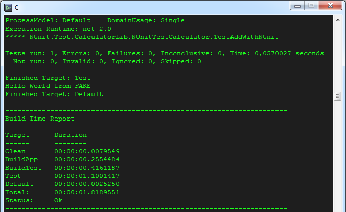

Getting started with FAKE - F# Make
Note: This documentation is for FAKE.exe version 5.0 or later. The old documentation can be found here
In this tutorial you will learn how to set up a complete build infrastructure with "FAKE - F# Make". This includes:
- how to install the latest FAKE version
- how to edit and run scripts
- how to automatically compile your C# or F# projects
- how to automatically run NUnit tests on your projects
Install FAKE
"FAKE - F# Make" is completely written in F# and all build scripts will also be written in F#, but this doesn't imply that you have to learn programming in F#. In fact the "FAKE - F# Make" syntax is hopefully very easy to learn.
There are various ways to install FAKE 5
-
Install the 'fake' or 'fake-netcore' package for you system (currenty chocolatey) Example
choco install fake -pre Use it as dotnet tool: Add
<DotNetCliToolReference Include="dotnet-fake" Version="5.0.0*" />to your dependencies and rundotnet fake ...instead offake ..., see this example-
Bootstrap via shell script (fake.cmd/fake.sh), see this example project
DISCLAIMER: These scripts have no versioning story. You either need to take care of versions yourself (and lock them) or your builds might break on major releases.
Create and Edit scripts with Intellisense
Once fake is available you can start creating your script:
- Create a new file
myscript.fsxwith the following contents:
1: 2: 3: |
|
Note:
storage: noneis currently required because of a bug, but it will be added by default.
Where you can add all the fake modules you need.
-
run the script to restore your dependencies and setup the intellisense support:
fake run myscript.fsx. This might take some seconds depending on your internet connectionThe warning
FS0988: Main module of program is empty: nothing will happen when it is runindicates that you have not written any code into the script yet. - now open the script in VS Code with ionide-fsharp extension or Visual Studio.
Note: If you change your dependencies you need to delete
myscript.fsx.lockand run the script again for intellisense to update. Note: Intellisense is shown for the full framework while the script is run asnetcoreapp20therefore intellisense might show APIs which are not actually usable.
Example - Compiling and building your .NET application
This example will guide you by adding a fake script to your existing .NET application.
Getting started
Initially we need to create a file called build.fsx where our build-logic will have its home.
Create a new file with Visual Studio or Visual Studio Code (with ionide) and paste the following content:
1: 2: 3: |
|
This is all we need for now to declare that we need the Fake.Core.Target module and want to enable intellisense.
Now run fake run build.fsx to make fake prepare our environment. Now our IDE can load the dependencies and will have intellisense enabled (you might need to reopen the script file on some Editors).
Now that we have setup our basic environment to edit the script file we add our first target:
1: 2: 3: 4: 5: 6: 7: 8: 9: 10: 11: 12: 13: |
|
As you can see the code is really simple. The few first lines (nuget Fake.Core.Target and open Fake.Core) load the fake modules we need and is vital for all build scripts to support creating and running targets. The #load line is optional but a good way to make the IDE aware of all the modules (for intellisense and IDE support)
After this header the Default target is defined. A target definition contains two important parts. The first is the name of the target (here "Default") and the second is an action (here a simple trace of "Hello world").
The last line runs the "Default" target - which means it executes the defined action of the target.
Try running your new target via fake run build.fsx or the shortcut for a file called build.fsx: fake build
Cleaning the last build output
A typical first step in most build scenarios is to clean the output of the last build. We can achieve this in two steps:
First change your header to the following by adding the Fake.IO.FileSystem module:
1: 2: 3: 4: |
|
Now we remove the build.fsx.lock file and run fake build in order to restore the newly added Fake.IO.FileSystem module.
As we can now work with intellisense we can easily discover the various modules and functions in Fake.IO, for example the Shell module provides various functions you expect from regular shell scripting, but we use Shell.CleanDir which will ensure the given directory is empty by deleting everything within or creating the directory if required:
Hint: you can explore the APIs for example by writing
Fake.IO.and waiting for intellisense (or pressingStrg+Space). You can removeFake.IOonce you putopen Fake.IOon top.
1: 2: 3: 4: 5: 6: 7: 8: 9: 10: 11: 12: 13: 14: 15: 16: 17: 18: 19: 20: 21: 22: 23: 24: 25: 26: 27: 28: |
|
We introduced some new concepts in this snippet. At first we defined a global property called buildDir with the relative path of a temporary build folder.
In the Clean target we use the Shell.CleanDir task to clean up this build directory. As explained above this simply deletes all files in the folder or creates the directory if necessary.
In the dependencies section we say that the Default target has a dependency on the Clean target. In other words Clean is a prerequisite of Default and will be run before the execution of Default:

Compiling the application
In the next step we want to compile our C# libraries, which means we want to compile all csproj-files under /src/app with MSBuild.
Again we need some new modules for this namely Fake.DotNet.MsBuild and Fake.Core.Globbing.
Just like before add the required modules on top via nuget Fake.DotNet.MsBuild and nuget Fake.Core.Globbing, delete the build.fsx.lock file and run the script.
Now edit the script like this:
1: 2: 3: 4: 5: 6: 7: 8: 9: 10: 11: 12: 13: 14: 15: 16: 17: 18: 19: 20: 21: 22: 23: 24: 25: 26: 27: 28: 29: 30: 31: 32: 33: 34: 35: 36: 37: 38: |
|
We defined a new build target named "BuildApp" which compiles all csproj-files with the MSBuild task and the build output will be copied to buildDir.
In order to find the right project files FAKE scans the folder src/app/ and all subfolders with the given pattern (the !! operator was imported from Fake.Core.Globbing via open Fake.Core.Globbing.Operators). Therefore a similar FileSet definition like in NAnt or MSBuild (see project page for details) is used.
In addition the target dependencies are extended again. Now Default is dependent on BuildApp and BuildApp needs Clean as a prerequisite.
This means the execution order is: Clean ==> BuildApp ==> Default.

Compiling test projects
Now our main application will be built automatically and it's time to build the test project. We use the same concepts as before:
1: 2: 3: 4: 5: 6: 7: 8: 9: 10: 11: 12: 13: 14: 15: 16: 17: 18: 19: 20: 21: 22: 23: 24: 25: 26: 27: 28: 29: 30: 31: 32: 33: 34: 35: 36: 37: 38: 39: 40: 41: 42: 43: 44: 45: 46: 47: |
|
This time we defined a new target "BuildTest" which compiles all C# projects below src/test/ in Debug mode and we put the target into our build order.
Running the tests with NUnit
Now all our projects will be compiled and we can use FAKE's NUnit task in order to let NUnit test our assembly (again we need a new module Fake.DotNet.Testing.NUnit):
1: 2: 3: 4: 5: 6: 7: 8: 9: 10: 11: 12: 13: 14: 15: 16: 17: 18: 19: 20: 21: 22: 23: 24: 25: 26: 27: 28: 29: 30: 31: 32: 33: 34: 35: 36: 37: 38: 39: 40: 41: 42: 43: 44: 45: 46: 47: 48: 49: 50: 51: 52: 53: 54: 55: 56: |
|
Our new Test target scans the test directory for test assemblies and runs them with the NUnit runner. FAKE automatically tries to locate the runner in one of your subfolders. See the NUnit task documentation if you need to specify the tool path explicitly.
The mysterious part (fun p -> ...) simply overrides the default parameters of the NUnit task and allows to specify concrete parameters.

What's next?
- Add more modules specific to your application and discover the Fake-APIs
- look at the quick start guide which has the same information in a more dense form.
- Add fake build scripts to your projects and let us know.
- Automate stuff with FAKE and use standalone scripts.
- Write your own modules and let us know.
- Contribute :)